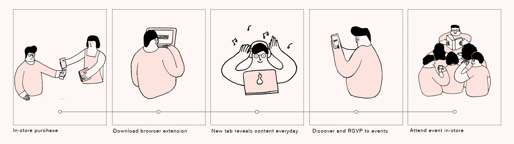

ROLE
My primary role for The Salon was helping direct a strategy and choosing the right platform for our intervention. For the execution phase of the project, I set the art direction for our pitch video and created the animations.
CONTEXT
This project came out a senior level experience design course. We were tasked with creating a digital intervention to address a business problem.
TEAM
Phoebe Lim, Jenny Nguyen, Christy Lum, Jessica Huang
The Brand
Aesop is a skincare brand that promotes a lifestyle enriched by art and literature. Aesop holds events in their stores celebrating local arts & culture. However, since they do not believe in conventional advertising, details about these events are accessible only through word of mouth. Invitations are only extended to those who frequent the store often enough to hear about them from staff. Aesop limits the opportunity to foster greater brand loyalty from occasional customers who want to engage with the brand.
To inform our process, we conducted interviews with Aesop customers and store consultants. These first-hand encounters informed "who" we are designing for. We learnt how Aesop is perceived by different customer segments- the frequenters, the occasional shoppers and the gifters(buys Aesop products as gift once or twice a year).
We decided to target the occasional customer who lacked an awareness of Aesop's investment in the Arts and Literature. The occasional customers would visit the store 1-2 times a year which restricted them from learning about events occurring in-store.
Process
Aesop has several websites and microsites ( Fabulist , The Ledger, Taxonomy of Design ) with content on literature, history, architecture and design. One of Aesop's focus is the cultural exchange that occurs through this investment and we imagined our intervention to reflect this value. To make informed decisions and scope down on our process, we set a two goals for our intervention:
• Reinforce Aesop's brand and its relationship with fine arts culture
• Increase re-engagement with Aesop's occasional customers
Acknowledging this, we chose to introduce a touchpoint that creates an awareness of the Aesop's culture outside of being a skincare company. In addition, we wanted to create tangible outcome of encouraging the occasional customers to visit Aesop stores.
The idea
They learn about the extension after a purchase, in-store or on their site, and in their newsletter. Customers will be sent to a site where they can download the extension. After they download the extension, their browser will display a new artwork daily when the user opens a new tab. Each artwork is tied to an upcoming Aesop event. The customer can RSVP to an event, and attend it.
Featured artwork
Once downloaded, the browser extension displays a piece of artwork (music, art, film, photography) everytime a new tab gets opened. Each featured artwork is tied to an upcoming Aesop event.
Artwork as an invitation
Clicking on the invitation takes you to a microsite where you can learn about the artwork and the artist or RSVP to the event to attend it.
UI considerations
Reflective of Aesop focus on arts and culture, we wanted to incorporate poetic elements into our design. We chose to design a browser extension due to its habitual nature; Similar to rituals of washing & moisturizing one's hands and face, the action of opening a new browser tab is habitual & reoccurring.
Due to a browser's limited functionality based on the browser, we implemented a microsite for more flexibility, allowing the information to be accessed on platforms besides desktop.
Low and medium fidelity of chrome extension. Following the guidelines of Google Venture's Design Sprint, we approached our form through a lateral process, going between sketches and digital wireframes.
Interactions
Reflective of Aeosop's "reveal themselves slowly – more whisper than scream" philosophy, we imagined the interface's look & feel to be rooted in the concept of the project: subtlety. The interactions reflect this by using interactions such as overlay & hover.

Overlay interaction on the home page

Slow reveal interaction upon hovering
After 3 weeks of research and iteration, we finalized our digital intervention that we believed was most reflective of Aesop's identity. Here is an animated pitch video for the proposal!: